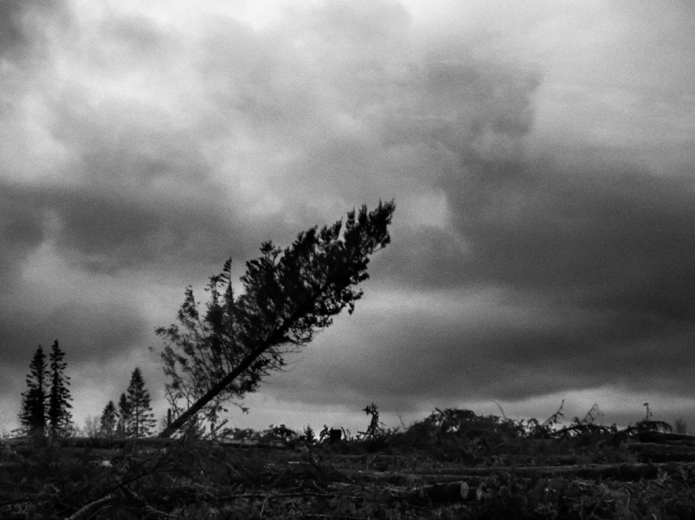

heNt Ar c’hOAD
DONt A reONt ’DArre
Laket neuint ac’hanon da vale war ur parkad holen Petra eo ar c’hoari-se ? ne Ouian ket ar reolenn
ne Vin ket leusket da gousket ne Ouian ket pegeit e pado Met ret e vo din chom bev Kousto pe gousto
Teir eur beure, tostaat a reont
Deuit, eta, din hay, kozh chas an ifern Goulaouenn ebet, n’am eus ket aon Kar pell emaint evit poent
Poent eo din kar emaint o tont da gerc’hat ac’hanon Met ne ouian ket da belec’h e vin kaset
Petra a faota dezhe ? Lârit din-me! Daoust-hag-eñ on mezv pe o kousket c’hwek ?
Petra a (d)teuin da vezañ ? Petra am eus graet dezhe ? Piv a harzo anezhe ?
A-benn monet dioute e vo ret din mont pell alemañ met n’eo ket toullet ma hent
Ret e vo din tec’hel kuit e-keit ha ma chomin bev ha gant ma ivinoù e vo ret din toullañ ma bez
Me a ouie a-walc’h e vefent deuet adarre Da glask mougañ ac’hanon mare pe vare
Daou zen war droad ha c’hwec’h war varc’h
Kignat ma c’horf ha ma c’hroc’hen, cheñch plas d’am eskern N’eus den ebet, den kap da lâret, ma ec’h on bev c’hoazh pe ma ec’h on marv
Soudarded an noz, chomit pell diouzhin, kar pa (z)tivunin e vin gouest d’ho lazhañ
N’eo ket arri ar fin, n’on ket marvet, met trawalc’h eo din gant an dra-se
Harz ebet ken, ne c’hallan ket ken, met chom a rin mut a flac’had da flac’had
LA route du bois
iLs reviennent
Ils m’ont fait marcher sur un champ de sel
Quel est ce jeu dont je ne connais pas les règles ? Ils ne me laisseront pas dormir
Je ne sais combien de temps cela durera Mais il faut que je reste vivant
Coûte que coûte
Trois heures du matin, ils approchent
« Approchez, chiens de l’enfer » Pas de lumière, je ne crains rien Car ils sont encore loin
Il faut que je me dépêche ils vont venir me prendre Je ne sais où ils m’emmèneront
Que veulent-ils ? Dites-moi si je suis saoul ou si je dors Que vais-je devenir ? Qu’est-ce que je leur ai fait ?
Qui les arrêtera ?
Pour me défaire de leur griffes il faut que je parte ma route n’est pas tracée
Il faut que je parte avant d’avoir à creuser ma tombe avec mes ongles
Je savais bien qu’ils reviendraient M’étouffer
Deux hommes à pied et six à cheval
Ecorcher mon corps, ma peau, changer mes os de place Personne ne peut dire si je suis encore en vie
Soldats de la nuit restez loin de moi ou je vous tuerai à mon réveil
Ce n’est pas encore la fin, mais j’en ai assez
Ils n’ont plus de limite, je n’en peux plus mais je resterai muet malgré les coups
The way To The foresT
They’re Coming BaCk
They made me walk over a salt field
What is this game whose rules I don’t know? They won’t let me sleep
I don’t know how long it will last But I have to stay alive
No matter what
Three in the morning, they walk over “Get over here, you hounds of hell” No light, I have no fear
They are still far
I have to hurry they’re coming to take me I don’t know where they’ll carry me
What do they want? Tell me if I’m drunk or sleeping What will become of me? What did I do to them? Who will stop them?
To break free of their grasp I have to leave I don’t know the way
I have to leave before I have to dig my own grave with my fingernails
I knew they’d come back again To suffocate me
Two men on foot and six on horses
To flay my body, my skin, switch my bones around Nobody can tell if I’m still alive
Night soldiers, stay away from me or I’ll kill you when I wake
It’s not over yet, but I’ve had my fill
They’ve gone past their limits, I can’t stand it, but I take their blows in silence
Dont a reont din ha neuint ket lâret din evit peseurt rezon e-Keit ha ma ne vo ket lazhet an tan gant ma c’hwezenn e vo ret din anduriñ o zaolioù treid hag o lezenn
N’on ket yac’h ken ha neuint ket bet o gwalc’h
Ne ouian ket abalamour da betra ec’h on bet dalc’het Ne ouian ket pegeit a zo ec’h on bet bac’het
Goull a reont adarre na vefe ket nac’het Gwelloc’h e vefe bet din bout lazhet
kar sur eo bremañ ne vin ket dizalc’het
Ma n’em eus ket c’hoant da vezañ krignet gant o saout lart e vo ret din debriñ razhed
Krog on da grenañ, koll a ran ma skiant, dont a ra berr ma alan Orjal pik tro-dro d’am skevent, sachañ a ran warni,
koll a ran ma spered
Nadozioù an horolaj e-barzh ma bruched Huchal a ran gant an esperañs da vezañ klevet
Deus ma ene ne choma ket nemet bruzun o c’hortoz na vefe an deiz digoret
Tout ma izili mesket ha divesket, an darn vrasañ anezhe a zo bet tennet
D’anduriñ seurt-se, nann sur, me n’on ket bet desket Kerzh da c’hoût beket pegoulz e c’hallin monet
Da harzañ ac’hanon-me da zivuniñ :
Kroc’hen ma daoulagad a zo bet speget
Hag evel ma ne vije ket trawalc’h, da harzañ ac’hanon da zibuniñ : ma zeod a zo bet troc’het
Met gallout a reont ober ar pezh a garont Bev on c’hoazh ha ne vin ket diskaret Ya, gallout a reont ober ar pezh a garont Bev on c’hoazh ha ne vin ket diskaret
Deus ma bouzelloù em eus tennet ur re sizailhoù
Ha war ma c’horf n’eus ket roud ebet ken, koulz lâret, Bremañ n’em meus ket soñj e peseurt mod on bet jahinet Gallout a rin tremen an devezh ha gortoz ma teufent adarre
Ils veulent ma peau et ils ne m’ont pas dit pourquoi Tant que ma sueur n’aura pas éteint le feu
il faudra que j’endure leurs coups de pieds et leur loi
Je n’en peux plus mais ça ne leur suffit pas Je ne sais pourquoi ils me gardent
Depuis combien de temps je suis enfermé Ils demandent encore qu’on leur obéisse Il vaudrait mieux qu’ils m’achèvent
Car je sais maintenant qu’ils ne me libèreront pas Si je ne veux pas être grignoté par leurs limaces Il faudra que je bouffe du rat
Je commence à trembler et je perds la raison, mon souffle s’affaiblit
Des barbelés autour des poumons, j’étouffe, je perds mes esprits
Les aiguilles de l’horloge plantées dans mon torse, je hurle dans l’espoir d’être entendu
De mon âme il ne reste que des miettes qui attendent que le jour se lève
Tous mes membres entremêlés, arrachés On ne m’a pas appris à endurer cela, allez savoir jusqu’à quand je tiendrai
Pour que je ne me réveille pas ils m’ont collé les paupières Et comme si ce n’était pas assez, pour que je ne me plaigne pas ils m’ont coupé la langue
Mais ils peuvent bien faire ce qu’ils veulent Je suis encore là et ils ne m’abattront pas Mais ils peuvent faire ce qu’ils veulent
Je suis encore là et ils ne m’abattront pas
J’ai réussi à enlever les ciseaux plantés dans mes entrailles Pour ainsi dire les cicatrices ont disparu
Je ne sais même plus ce qu’ils m’ont fait subir
Je vais pouvoir passer la journée et attendre qu’ils reviennent
They want to kill me and they haven’t said why As long as my sweat hasn’t extinguished the fire I’ll have to endure their kicks and their law
I can’t stand it, but that’s not enough for them I don’t know why they keep me
For how long have I been locked up They still demand obedience
They should just finish me off
I know now they’ll never set me free
If I don’t want their slugs to nibble me away I’ll have to eat rat
I start shaking and lose my mind, my breath is weaker now Barbed wire around my lungs, I suffocate, I lose my head The hands of the clock piercing my body,
I howl in the hope I’ll be heard
All that’s left of my soul is crumbs waiting for the sun to rise All my limbs intertwined, ripped away
I was never taught to endure this, who knows until when I’ll last To stop me from waking, they have stuck down my eyelids
And as if that wasn’t enough, to stop me complaining, they have cut out my tongue
But they can do whatever they want
I’m still here and they won’t wipe me out But they can do whatever they want
I’m still here and they won’t wipe me out
I’ve pulled out the shears piercing my entrails In a way, the scars have disappeared
I can’t even remember all they put me through I’m going to go about my business
and wait for them to come back
.
..î
•
,�
•
huNvreOù merGlet
Aesoc’h e vefe bet deomp mont war-eeun ha pas monet war-gil a-Benn ar fin ec’h eomp dre hentoù leun a linad
Pell deus trouz an tamboulinoù
ne Dremena ket an heol a-dreuz ar gwez pin Ar gwin a dapa plas ar morfin
Naon memp c’hoazh pa vezomp leun Hom speredoù a c’houlla greun Choazet meump hom (p)flanedenn
Kar ne c’houllemp ket chom e-barzh an deun
Daou-ha-daou, unan-hag-unan
N’omp ket deus ar re a glaska mont war-eeun Ha mac’h eo ret lakaat devezhioù leun
Dont a rimp a-benn da vont beket penn ar (g)yeun
Pep hani en deus e vod, en deus e vod da vezañ drol N’eus ket nemet an dud tort a zo kap da zerc’hel an taol Pa vezer taolet ha distaolet evel tud pennfollet
Ne reer ket foutre ken da dremen evit tud kollet
« Piv eo ar re-mañ gant o reun war o fennoù ? » Graet e vez deusomp « Paotred tralalaleno » N’eus ket kalz a dra e-barzh hom malizennoù
Pa ec’h arriomp en un tu bennaket e klever youc’hadennoù
Ha da zonet war hom lerc’h, n’eus ket kalz tud a gav din met mim ne reomp ket foutre kaer
Kar ne reomp ket kalz a gaz ma ne faota ket deoc’h N’eus ket afer da vezañ kalz da gavout berr an amzer
Hunvreoù merglet Tavarnioù serret
Sec’hed ar seizh pec’hed Kalonoù disec’het Sklankerien daonet Kroc’hen marnaoniet
Klask kig evel loened diaoulet
Des rêves rouillés
Ça aurait été plus facile de marcher droit sans regarder derrière mais nous voilà sur des chemins couverts d’orties
Loin du bruit des tambours
Le soleil ne traverse pas les pins Le vin est notre morphine
Nous avons encore faim quand nous sommes pleins nos esprits réclament encore du grain
nous avons choisi notre destin pour éviter de sombrer
Seuls ou par deux
nous ne sommes pas de ceux qui cherchent à marcher droit et même si cela doit prendre des journées entières
nous arriverons à passer le marais
Chacun est étrange à sa manière
Il n’y a que ceux qui ont l’esprit tordu qui peuvent tenir le coup Quand on est malmené de tous côtés
on s’en fout d’être pris pour un paumé
Qui sont ces gens avec leur tignasse ? On nous appelle les gars tralaleno
Il n’y a pas grand-chose dans nos valises quand on arrive on entend les gens hurler
Il y a peu de gens qui nous suivent Mais peu importe
On n’a pas besoin d’être nombreux pour trouver le temps court
Des rêves rouillés Des bistrots fermés
La soif des sept péchés Des cœurs desséchés Des ivrognes damnés De la peau affamée Cherchant la chair comme des animaux endiablés
Rusted dReams
It would have been easier to walk on without looking back but here we are on paths covered in nettles
Far from the drum beat
The pine trees block the sun Wine is our morphine
We are still hungry after we’re full our minds demand more grain we have chosen our destiny
to avoid giving in
Alone or in pairs
it’s not our style to try and walk straight and even if it takes us days on end we’ll get through this swamp
We’re all strange in our own ways
Only those with twisted minds can hold out When you’re buffeted from all sides
you don’t care who thinks you’re a loser
Who are those people with all the hair? They call us the tralaleno boys
There’s not much in our baggage
when we arrive, we hear people scream
There are few who follow us But it doesn’t matter
There’s no need for a crowd to see how time flies
Rusted dreams Closed down bistrots
The thirst of the seven sins Dried out hearts
Doomed drunkards Starving skins Seeking flesh
like rambunctious animals
Kavout a reomp gwelloc’h an traoù fall evit ar re neuint ket a vlaz Ober a reomp hom seizh gwellañ evit chom da serriñ an tachoù Deus hom langajoù ne choma ket nemet restachoù
eVel bleizi arajet ec’h imp betek penn an dachenn
Sot omp gant tout ar pezh a zo treñk ha gant tout ar pezh a zo kreñv Trinkañ a raimp d’ar rouz beure pelloc’h evit seizh buhez
warn-ugent deus reñk
Pegeit a zo e reomp fae gant an drein a zo chomet abaoe pell e-barzh hom zreid?
N’eo ket an dra-se, na pouez ar mein a lako ac’hanomp da blegañ hom c’hein
Petra an diaoul a reomp amañ?
Piv eta, en defe c’hoant da zont da chom e-barzh an toull-mañ ? Tout an olifanted a skoach a-raok mougañ
N’it ket da c’houll digante kontañ deoc’h o zourmant
Den ebet na oar ar pezh a vanke deomp Yaouankiz kamm gant ar memes ezhomm
Deuet omp da ’n om goll e-lec’h ma ec’h a kuit an holl Hom-unan pe a-stroll e (t)dremenomp evit tud foll
Kousket er-maez pa vez yen, badaouet gant ar gwin
Seurt traoù a zo bet c’hoarvezet ha ne lâran ket na c’hoarvezo ken Taolioù fall a vez sur e-barzh kreiz an holl blijadurioù
e-Barzh ar vro pa ’n om lazha un den e vez lâret en deus bet ur marv naturel
Hunvreoù merglet Tavarnioù serret
Sec’hed ar seizh pec’hed Kalonoù disec’het Sklankerien daonet Kroc’hen marnaoniet
Klask kig evel loened diaoulet
Nous préférons les mauvaises choses à celles qui n’ont pas de goût
Nous faisons de notre mieux pour rester bons derniers De notre gouaille il ne reste que des restes
Comme des loups enragés nous irons jusqu’au bout
Nous adorons tout ce qui est acide et tout ce qui est fort Nous trinquerons à l’aurore plus de vingt-sept vies à la suite Depuis combien de temps faisons-nous fi
des épines dans nos pieds ?
Ce n’est ni cela ni le poids des pierres qui nous fera courber l’échine
Que diable faisons-nous là ?
Qui donc voudrait rester dans ce trou ? Les éléphants se cachent avant d’étouffer
Ne leur demandez pas de vous raconter leurs tourments
Personne ne sait ce qui nous manquait Jeunesse boiteuse avec les mêmes désirs
Nous sommes venus nous perdre là d’où tout le monde s’en va Seuls ou en groupe nous passons pour des fous
Dormir dehors quand il fait froid assommé par le vin Ce genre de choses est arrivé et je ne dis pas
que ça n’arrivera plus
Des coups durs il y en a au milieu de tous les plaisirs Dans le pays quand quelqu’un se suicide
on dit qu’il est mort de mort naturelle
Des rêves rouillés Des bistrots fermés
La soif des sept péchés Des cœurs desséchés Des ivrognes damnés De la peau affamée Cherchant la chair comme des animaux endiablés
We prefer bad things to things that have no taste We do our best to come dead last
All that’s left of our cheeky humour is leftovers Like rabid wolves, we’ll hold out until the end
We love everything sour and everything strong We’ll drink at dawn to twenty-seven lives in turn
For how long have we made light of the thorns in our feet?
It’s neither that nor the weight of the stones which bows our backs
What in hell are we doing here?
Who would choose to stay in this hole? Elephants hide before dying, suffocated Don’t ask them to describe their torment
Nobody knows the things we didn’t have Doddering youth with the same desires
We came to lose ourselves where everyone passes on Alone or together, we look like lunatics
Sleeping outside when it’s cold, floored by wine
It’s happened before and I can’t say it won’t happen again A harsh blow can interrupt any kind of pleasure
In this country, when someone kills themself, they call it natural causes
Rusted dreams Closed down bistrots
The thirst of the seven sins Dried out hearts
Doomed drunkards Starving skins Seeking flesh
like rambunctious animals
P-A-l
Paotr al lambig on bet e-pad pell hag ec’h an war ma c’hemend-all Dismantret em eus tout ma arc’hant oc’h evañ (s)jistr ha gwin ardant Difoeltret em eus ma gwenneien, pezhioù arc’hant hag aour melen
Ne ouian ket ma vin lazhet gant ar gwin, met gant ar whisky kazi sur e vin
Pa ec’h an d’un davarn bennaket ne vezan ket gwelet gant ar merc’hed Koant hardizh eo ar pikezet-se, me a garfe a-walc’h e vefent din-me
O anal a zistanfe ma fenn evel ar glizh war ar winienn (bis)
Leusk ac’hanon d’evañ p’am bez sec’hed, da zebriñ pa vezan marnaoniet Ro arc’hant din pa vin arri kras, un doue bennak pa sono ma glaz
Ar vuhez a zo ur voutailhad pa vez lonket e vezer kollet mat Met ma chom un dakenn odivi a galon vat en om veuzin enni
L’ivrogne
Je suis ivrogne depuis longtemps et je ne vais pas en m’améliorant J’ai dépensé tout mon argent dans le cidre et l’eau-de-vie
J’ai dispersé mes sous, mes pièces d’or et d’argent
Je ne sais pas si le vin me tuera mais le whisky ça ne fait aucun doute
Quand je vais dans un bar, les filles ne me regardent pas
Comme elles sont belles ces chipies, j’aimerais qu’elles soient miennes Leur souffle m’apaiserait comme la rosée sur la vigne (bis)
Laisse-moi boire quand j’ai soif et manger quand j’ai faim
Donne-moi de l’argent quand je suis fauché et un dieu quand le glas sonnera La vie est une bouteille quand on la boit d’un trait on est perdu
Mais s’il reste une petite goutte d’eau-de-vie je m’y noierai
The DrunkarD
I’ve been a drunkard for a long time and I’m not getting better I’ve spent all my money on cider and brandy
I’ve frittered away my pennies, my gold and silver coins
I don’t know if the wine will kill me, but I’m sure the whisky will
When I go to a bar, the girls don’t give me a glance
The little minxes are so beautiful, I wish they could be mine Their breath would soothe me like dew on the vines (repeat)
Let me drink when I’m thirsty and eat when I’m hungry
Give me money when I’m broke and a God when my death knell sounds Life is a bottle, when you down it in one, it’s all over
But if there’s still a drop of brandy, I’ll drown myself in it
lAPOuseD tOrret
Chom a raio kelien
Lapoused torret ha laerien
Ur vatailhon verien o varailhat aet skuizh gant ar veleien Debrerien tud war hentoù mut o skoachañ an eil deus egile Klaskerien vara debrailhet
o tibuniñ marvailhoù
Chom a raio amprevaned
C’hwiled o tebriñ gwenneien Ne vo ket gwezenn ebet ken
ne Chomo ken nemet mein hag iliav Treiñ a raio ma zreid treitour
war-zu ar rinieroù seizet Tremen a rin dreist dezhe war un orjalenn gammigellet
Me ac’h aio beket ar c’hoad gwadigellet
da welet ma choma un dra bennaket da welet Eno e kavin ur vran o vrañsigellat
Klask a raimp derc’hen soñj, derc’hen krog e-barzh, derc’hen da vont
Des oiseaux cassés
Il restera
des mouches
Des oiseaux cassés et des voleurs Un bataillon de fourmis bâillant fatiguées des prêtres
Des cannibales sur des routes muettes se cachant les uns des autres
Des clochards débraillés débitant des merveilles
Il restera des insectes
Des coléoptères grignotant de la petite monnaie Il n’y aura plus d’arbres
Il ne restera que des pierres et du lierre Mes traîtres pieds se tourneront
vers les rivières paralysées Pour les traverser
je marcherai sur un fil entortillé
J’irai jusqu’au bois sanguinolent voir s’il reste des choses à regarder
Là-bas je trouverai un corbeau se balançant
Nous essaierons de nous souvenir, de tenir bon et de continuer
Broken Birds
All that remains will be flies
Broken birds and thieves
A battalion of yawning ants tired of priests
Cannibals on silent streets hiding from each other Bedraggled tramps spouting wonders
All that remains will be insects
Beetles nibbling at small change There will be no trees
Only stones and ivy will remain My treacherous feet will turn towards the paralyzed rivers
To cross them
I will walk on a tangled wire
I will go to the blood-soaked woods to see what’s left to see
There, I will find a crow, rocking
We will try to remember,
to hold on and to keep going
Chom a raio koumoul biskoulet toullet ha didoullet Koulmed skoulmet
gant ur skoulad skouled Un heureuchin houarnet
o hurusañ e-barzh ur bed dic’houloù Ur c’heflusker dirod
oc’h en om veuziñ e-barzh ur pod
Chom a raio an derzhienn
a lako ac’hanomp da zerc’hen
Daoust d’ar soñjoù peilhet hag eilpennet Daoust da dout ar pezh a zo bet difennet
Chom a raio
ur bagad dridi dindan ma bizied o lenn braille da groc’hen lorc’h a vo enne o nijal adarre
Hejet ha dihejet
e vimp plijet gant ar voemijenn Daoust d’an deñvalijenn
ne bozimp ket hom malizenn
Klask a raimp derc’hen soñj, derc’hen krog e-barzh, derc’hen da vont
Il restera
des nuages envahis par les chenilles percés et repercés
Des colombes nouées
par une invasion de rapaces Un hérisson ferré
frissonnant dans un monde sans lumière Un moteur sans roues
se noyant dans un seau
Il restera la fièvre
qui nous fera continuer
Malgré les souvenirs épluchés et renversés Malgré les interdits
Il restera
une nuée d’étourneaux sous mes doigts lisant le braille de ta peau
ils seront fiers de reprendre leur envol Remués de tous côtés
le vertige nous plaira Et malgré l’obscurité
nous ne poserons pas notre valise
Nous essaierons de nous souvenir, de tenir bon et de continuer
All that remains
will be clouds overrun with caterpillars punctured over and over
Doves tied in knots
by invading birds of prey A fettered hedgehog
shivering in a lightless world An engine without wheels drowning in a bucket
All that remains will be fever
which will spur us on
In spite of the husked, upended memories In spite of what’s been banned
All that remains
will be a cloud of starlings under my fingers reading the braille of your skin
they will be proud to flit off again Hustled from all sides
we’ll enjoy the dizziness And in spite of the dark
we will not set down our baggage
We will try to remember,
to hold on and to keep going
)
liv mut
N’eus ken nemet kozh traoù en-dro din Ha dont a ran da vezañ heñvel dioute Dont a ra hir an amzer yen
Fenoz em eus aon, e vo trec’h an noz war an deiz
Sellet a ran deus ma c’hroc’hen o Tapout liv mut ar vorenn
Met goût a ran e teuio unan bennaket din Da laerezh ma c’horf diganin a-benn ar fin Gant ma izili e raio ar pezh en do c’hoant Ha n’em bo ket a boan
Taolioù dorn ha taolioù treid
N’eus mod ebet all da douch kig unan bennaket all Piv a gredo ? Hag e-pad pegeit ?
Dont da welet peseurt mod emañ kont e-barzh ar penn all
Sellet a ran deus ma c’hroc’hen o Tapout liv mut ar vorenn
Met goût a ran e teuio unan bennaket din Da laerezh ma c’horf diganin a-benn ar fin Gant ma izili e raio ar pezh en do c’hoant Ha n’em bo ket a boan
La couLeur muette
Il n’y a que des vieilleries autour de moi et je commence à leur ressembler
Le froid s’éternise
Aujourd’hui je crois bien que la nuit vaincra le jour
Je regarde ma peau
Prendre la couleur muette de la brume
Mais je sais que quelqu’un viendra à moi Dérober mon corps enfin
De mes membres qu’il fasse ce qu’il veut Je n’aurai pas trop mal
Des coups de poings des coups de pieds
Il n’y a pas d’autre moyen de toucher la chair d’un autre Qui osera et pendant combien de temps
Aller voir comment ça se passe de l’autre côté ?
Je regarde ma peau
Prendre la couleur muette de la brume
Mais je sais que quelqu’un viendra à moi Dérober mon corps enfin
De mes membres qu’il fasse ce qu’il veut Je n’aurai pas trop mal
The SilenT Colour
There are only old things around me and I’m starting to look like them The cold drags on
Today I feel like night will overcome day
I watch my skin
Taking on the silent colour of mist
But I know someone will come to me And finally steal my body
He can do what he will with my limbs It won’t hurt too badly
Punches and kicks
There’s no other way to touch another’s flesh Who will dare and for how long
To go and see what it’s like on the other side?
I watch my skin
Taking on the silent colour of mist
But I know someone will come to me And finally steal my body
He can do what he will with my limbs It won’t hurt too badly

leusk D’Ober AN DiDrOuz
Selaou ma mouezh Serr da zaoulagad Ha lak dousik
Da benn deus ma skoaz Pell e vimp deus amañ
Pa savo an deiz c’hoazh a-benn warc’hoazh
Leusk d’ober an didrouz
Ha leusk anezhañ da vont ennout n’az Pez ket aon
e-Lec’h mac’h eomp n’eus na brezel na glav Ezhomm az feus da gousket bremañ
Treiñ a rez da sot pa vezez skuizh marv
Dav eo dit leuskel
Da gorfig war da lerc’h Kerzh war gein ar gaouenn
Gwelet a ra sklaer en deñvalijenn
Kerzh war gein ar gaouenn
Kas a raio ac’hanout dreist d’an drez Dreist d’ar bleiz
a-Benn warc’hoazh e teuio ar voualc’hig Abred
Da ganañ dit ur son
Da skoachañ ac’hanout e-barzh ar c’hoadoù don
Dav eo dit leuskel
Da gorfig war da lerc’h Kerzh war gein ar gaouenn
Gwelet a ra sklaer en deñvalijenn
Laisse faire Le siLence
Ecoute ma voix Ferme les yeux
Et mets doucement
La tête sur mon épaule Nous serons loin d’ici
Quand le jour se lèvera demain
Laisse faire le silence Laisse-le s’installer en toi N’aie pas peur
Là où nous allons
Il n’y a ni guerre ni pluie Dors maintenant
Tu deviens fou quand tu es épuisé
Laisse ton petit corps derrière toi Va sur le dos de la chouette
Elle voit dans le noir
Va sur le dos de la chouette
Elle t’emmènera par-dessus les ronces Par-dessus le loup
Demain le merle viendra tôt Te chanter une chanson
Et te cacher dans les bois profonds
Laisse ton petit corps derrière toi Va sur le dos de la chouette
Elle voit dans le noir
Let the SiLence Do itS Work
Listen to my voice Close your eyes And lay your head
Gently on my shoulder We’ll be far from here
When the sun rises tomorrow
Let the silence do its work Let it settle within you Don’t be scared
Where we’re going
There’s neither war nor rain Sleep now
You go crazy when you’re exhausted
Leave your little body behind you Climb on the owl’s back
It can see in the dark
Climb on the owl’s back
It will carry you over the brambles Over the wolf
Tomorrow, the blackbird will come early To sing you a song
And hide you deep in the woods
Leave your little body behind you Climb on the owl’s back
It can see in the dark
WAr GeiN Ar GAOueNN
DOriOù
Mont a reomp pazenn-ha-pazenn Gant hom skalieroù frailhet
Hag a raok ma vefemp lazhet Drailhomp an dorioù morailhet
C’hwezh ar gwad, c’hwezh ar c’hwezenn Tremenet omp dre un nor bet alc’hwezet Reudet eo gwalenn da gein
Roet az feus din ar pezh n’am boa ket kredet reiñ
Da belec’h ec’h eomp?
Kollet, taolet ha distaolet gant ar gwenojennoù moan ec’ h eomp kamm-digamm hed-ha-hed hom c’hoant Daouzrailhet gant an tan on-me kaset ha digaset ha Mezevelliñ a ran
Ne ouier ket ken ha n’omp ket evit lâret Petra en deus e rannet
Petra a zo morailhet
Doriched hom spered a zo da frailhañ
na Lârit ket din ec’h eo arri ar fin, na lârit ket din «ar fin zo arri» Kar arri sot-nay ne oar ket mat an nen ar pezh a raio Mezevelliñ a ran
evel ma vije bet lemmet diganin un hanter hani Kroc’hen un dremm e-tal ma c’hichen
Ret mont kuit a-raok ma teuio ar yenijenn Badaouet daou-ha-daou atav
Petra meump ijinet?
aBalamour da betra ne meump ket remerket e oa tremenet ar glav?
Sur le doS de la chouette
leS porteS verrouilléeS
Nous avançons pas à pas Par nos escaliers lézardés Et avant qu’on ne nous tue
Déchirons les portes verrouillées
Odeur de sang, odeur de sueur
Nous sommes passés par une porte fermée à clé Ta colonne vertébrale est raide
Tu m’as donné ce que je n’avais pas espéré
Où allons-nous ?
Perdus, jetés de tous bords sur des sentiers étroits Nous boitons suivant nos envies
Déchiré par le feu, je suis malmené et Je vertige
Nous ne savons plus et nous ne pouvons dire Ce qui a été partagé
Ce qui est verrouillé
Nous devons fendre les portes de nos esprits Ne me dites pas que c’est la fin
Celui qui devient fou ne sait plus ce qu’il va faire Je vertige
Une moitié de moi arrachée
La peau d’un visage à mon côté
Il faut partir avant que n’arrive le froid Toujours assommés deux par deux
Qu’avons-nous imaginé ?
Pourquoi n’avons-nous pas remarqué que la pluie était passée ?
On the Owl’s back
the bOlted dOOrs
We walk on step by step Up our cracked staircases And before they kill us
Let’s shred the bolted doors
The smell of blood, the smell of sweat
We came through a door which was locked Your backbone is straight
You have given me what I never hoped for
Where are we going?
Lost, thrown from all sides onto narrow pathways We hobble after our desires
Torn by the fire, I am buffeted and Dizzy
We no longer know and can’t say What was shared
What is bolted up
We must cleave the doors of our minds Don’t tell me this is the end
A man who goes crazy doesn’t know what he’ll do Dizzy
Half of me torn away
The skin of my face by my side
We must leave before the cold comes Still stunned two by two
What did we imagine?
Why didn’t we notice the rain had come and gone?
Huñvreal a rez war-sav
N’out ket kousket koulskoude met arri eo ar c’houlz da ziblouzañ ma dousig
Mallozh an Doue,
ec’H eomp an daou asambles gant an hentoù disammet da james hom speredoù
Diskouez a raimp an eil d’egile ar gwenojennoù Biken n’en em yenin diouzhit
Pignat a rin ar menezioù, treuziñ a rin ar rinierioù hag ivez, diradena a rin Plouie!
Den na vo kad da zihentiñ ac’hanon Deus ar re all ne reomp ket a van Deus ma farez
Kar n’on ket kreñv a-walc’h evit ober gant ar c’hleñved a boazh ac’hanon
Hi ’n deus ar galloud da liammañ ha da ziliammañ da bareañ pe da lazhañ ac’hanon
Hi ’n deus savet al lezenn ha bremañ on dilezet ganti Ken e krenan gant an derzhienn
Ren a ra krenn-ha-krenn ma c’horf ha ma ene N’on ket evit gortoz ken
Tapit krog en ur morzhol ha skoit gant ma fenn Ken a vo digoret penn-da-benn
e-Barzh ma c’hig emañ da ivinoù
Ha ma gwad a zo e-barzh da c’henoù Debret ez peus ac’hanon en ur zont din aDalek bremañ ne vo ket heñvel ken
Tu rêves éveillée
Tu ne dors pas et c’est maintenant le moment de se lever pour de bon
Allons ensemble par les chemins Nos esprits soulagés à jamais
Nous nous montrerons l’un à l’autre les chemins de traverse Je ne m’éloignerai pas de toi
Je gravirai les montagnes, traverserai les rivières et débarrasserai Plouyé de ses fougères
Personne ne pourra me faire dévier de mon chemin Viens ma moitié
Je ne suis pas assez fort pour vivre avec la maladie qui me cuit
Elle a le pouvoir de lier et de délier, de guérir et de tuer Elle a bâti la loi et maintenant elle me laisse
je tremble de fièvre
Elle règne pleinement sur mon corps et mon âme Je ne peux plus attendre
Prenez un marteau et frappez-moi à la tête Jusqu’à l’ouvrir d’un bout à l’autre
Tes ongles dans ma chair Mon sang dans ta bouche Tu m’as dévoré
Plus rien ne sera pareil désormais
You have a waking dream
You aren’t sleeping and it’s now time to get up for good Let’s take the pathways together
Our minds soothed forever
We will show each other the shortcuts I’ll stay by your side
I’ll climb mountains, cross rivers and clear Plouyé of its bracken
Nobody will be able to divert me from my path Come, my better half
I am not strong enough to live with the disease which is burning me
It can bind me and unbind me, cure me or kill me It wrote the law and now it’s leaving me
I’m shaking with fever
It rules completely over my body and my soul I can’t wait any longer
Take a hammer and hit me on the head Until it splits from side to side
Your nails in my flesh My blood in your mouth You have devoured me
Nothing will ever be the same again

’N Om Gustumiñ
Deus AN DeñvAlijeNN
e-Barzh ar vro-mañ
N’eus ket nemet ar gouloù a c’hell chom hep louediñ Met maleüruzamant ne (deu)ta ket beket amañ
Adalek bremañ e chomimp staget ha tapet omp da c’hortoz ar gozhni
Uzet hom daoulagad oc’h en om gustumiñ deus an deñvalijenn e klaskomp harzoù hom skeudenn
Chaokat a reomp soñj ur flouradenn merglet gant an amzer o tremen Rechetiñ a reomp hom chadenn en ur zisoñjal kement liv a zo er-maez Met faota ket deomp en om chalañ, goût a ouiemp ne vefe ket bet aes
Blaz gris ar sec’hed Kig kriz ar mein glas Daoulagad marvennet O vale paz-ouzh-paz
Bouilhenn e-barzh ar bouzelloù Dour (g)yeun e-barzh hom c’hreuz C’hwesha a ra an anken
Hep ober kalz a reuz
Mizer da vale Kourailhoù drailhet Ha malet Devezhioù ludu Nozvezhioù gweet
Me a garfe bezañ penn-dall
Lazhañ a rin ar pezh a chom deus an oabl Da vouchañ gwennder he c’hein sal
S’habituer
à l’obScurité
Dans ce pays
Il n’y a que la lumière qui ne moisisse pas Mais hélas, elle ne nous parvient pas
Désormais nous resterons liés et nous attendrons la vieillesse
Nos yeux usés à essayer de s’habituer à l’obscurité Nous cherchons les contours de notre ombre
Nous mâchons le souvenir d’une caresse rouillée par le temps qui passe
Nous vomissons notre chaîne en oubliant les couleurs
du dehors
Mais nous n’avons pas à nous plaindre, nous savions que ce serait pas facile
Le goût gris de la soif
La chair crue de l’ardoise Des yeux gangrenés
Qui marchent au pas
De la boue dans les boyaux Un marais dans l’estomac L’angoisse transpire
Sans faire trop de bruit
De la peine à marcher Des abats déchirés
Et broyés
Des jours de cendre Des nuits tordues
Je voudrais être aveugle
Je tuerai ce qu’il reste du ciel
Pour embrasser la blancheur de son dos salé
GettinG Used to darkness
In this land
Only the light resists mould But alas, it doesn’t reach us
From now on, we’ll stay together and wait to grow old
Our eyes are worn from trying to get used to the darkness We search for the outlines of our shadows
We chew over the memory of a caress rusted by passing time We vomit our chains while forgetting the colours outside
But we can’t complain, we knew this wouldn’t be easy
The grey taste of thirst The raw flesh of slate Gangrened eyes
Which keep plodding on
Mud in our guts
A swamp in our stomachs We excrete our fear Keeping the noise down
We struggle to walk Torn guts
Pulped Ashen days
Twisted nights
I wish I was blind
I’ll kill what’s left of the sky
To kiss the whiteness of its salty back
mOuAr